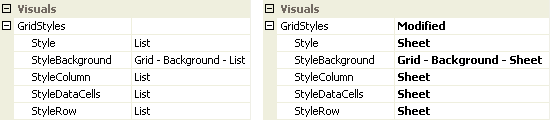
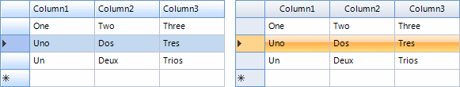
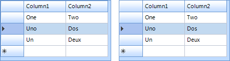
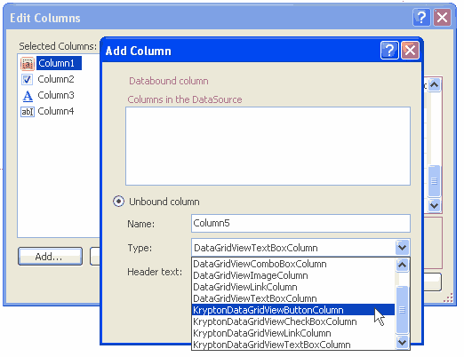

KryptonDataGridView
Overview
KryptonDataGridView extends the standard Windows Forms DataGridView with full Krypton palette rendering for backgrounds, borders, headers, data cells, tooltips, and outer corner rounding. Data binding, editing, sorting, and column types follow the base DataGridView behavior; appearance is driven by palette state properties instead of DefaultCellStyle colors in most scenarios.
Namespace: Krypton.Toolkit
Assembly: Krypton.Toolkit
Default event: CellContentClick
Designer: System.Windows.Forms.Design.DataGridViewDesigner
Inheritance: Object → MarshalByRefObject → Component → Control → DataGridView → KryptonDataGridView
For general grid behavior (binding, sorting, selection modes), see Microsoft DataGridView documentation.
Key features
Palette integration
PaletteMode,Palette, andRendererintegration with global theme changesStateCommon,StateNormal,StateDisabled,StateTracking,StatePressed,StateSelectedGridStylesfor List, Sheet, Custom1–Custom3, and Mixed element styles- External corner rounding via
StateNormal.Border/StateDisabled.Border
Data and columns
- Full
DataGridViewdata binding (DataSource,DataMember, complex binding) AutoGenerateKryptonColumnsconverts generated columns to Krypton column types- Krypton column types for text, masked text, combo, numeric, domain, date/time, check box, button, link, image, progress, rating, and icon cells
Behavior
HideOuterBordersfor use insideKryptonGroupor with native outer roundingKryptonContextMenuand themedContextMenuStripsupport- Krypton tooltips with optional shadow (
ToolTipShadow) HighlightSearchfor in-grid search highlightingEditingControlButtonSpecClickwhen edit controls exposeButtonSpecsDoubleBufferedexposed in the designer (defaulttrue)
Class hierarchy
System.Object
└── System.MarshalByRefObject
└── System.ComponentModel.Component
└── System.Windows.Forms.Control
└── System.Windows.Forms.DataGridView
└── Krypton.Toolkit.KryptonDataGridView
Constructor
KryptonDataGridView()
public KryptonDataGridView()
Initializes palette states, view manager, double buffering, DPI-adjusted default column header height, corner-rounding region, and cell-style sync with the active palette.
Properties
Palette and rendering
PaletteMode
[Category("Visuals")]
[DefaultValue(PaletteMode.Global)]
public PaletteMode PaletteMode { get; set; }
Palette source for drawing. PaletteMode.Custom requires Palette to be assigned. Changing this raises PaletteChanged and relayouts the control.
Palette
[Category("Visuals")]
[DefaultValue(null)]
public PaletteBase? Palette { get; set; }
Custom palette instance. When set, PaletteMode becomes Custom. ResetPalette() restores global mode.
Renderer
[Browsable(false)]
public IRenderer? Renderer { get; }
Active renderer resolved from the current palette (read-only).
Visual states
| Property | Type | Description |
|---|---|---|
StateCommon |
PaletteDataGridViewRedirect |
Shared defaults overridden by state-specific entries |
StateNormal |
PaletteDataGridViewAll |
Normal appearance; includes Background, Border, DataCell, HeaderColumn, HeaderRow |
StateDisabled |
PaletteDataGridViewAll |
Disabled appearance (same structure as StateNormal) |
StateTracking |
PaletteDataGridViewHeaders |
Header hover |
StatePressed |
PaletteDataGridViewHeaders |
Header pressed |
StateSelected |
PaletteDataGridViewCells |
Selected data cells and headers |
PaletteDataGridViewAll exposes:
Background— grid background fillBorder— outer grid border (designer-visible; use for corner rounding)DataCell,HeaderColumn,HeaderRow— per-element back, border, content
PaletteBorder on StateNormal is hidden from the designer; use Border instead.
GridStyles
GridStyles
[Category("Visuals")]
[DesignerSerializationVisibility(DesignerSerializationVisibility.Content)]
public DataGridViewStyles GridStyles { get; }
Compound property controlling grid element styles.
| Member | Type | Default | Description |
|---|---|---|---|
Style |
DataGridViewStyle |
List |
Overall style; sets column, row, data cell, and background together |
StyleColumn |
GridStyle |
List |
Column header style |
StyleRow |
GridStyle |
List |
Row header style |
StyleDataCells |
GridStyle |
List |
Data cell style |
StyleBackground |
PaletteBackStyle |
GridBackgroundList |
Background palette style |
DataGridViewStyle values: List, Sheet, Custom1, Custom2, Custom3, Mixed.
GridStyle values: List, Sheet, Custom1, Custom2, Custom3.
When individual element styles differ, Style becomes Mixed.
Behavior
HideOuterBorders
[Category("Visuals")]
[DefaultValue(false)]
public bool HideOuterBorders { get; set; }
When true, suppresses drawing of cell borders on the outer edge of the grid. Use with a parent KryptonGroup border, or rely on automatic suppression when corner rounding is enabled.
AutoGenerateKryptonColumns
[Category("Behavior")]
[DefaultValue(true)]
public bool AutoGenerateKryptonColumns { get; set; }
When true and AutoGenerateColumns is enabled, WinForms column types created from a data source are replaced with Krypton column types when ColumnCount is set.
DoubleBuffered
[Category("Behavior")]
[DefaultValue(true)]
public new bool DoubleBuffered { get; set; }
Reduces flicker during scroll and repaint (visible in the designer).
ShowCellToolTips
public new bool ShowCellToolTips { get; set; }
Enables Krypton-themed cell tooltips when cells define tooltip text.
ToolTipShadow
[Category("ToolTip")]
[DefaultValue(true)]
public bool ToolTipShadow { get; set; }
Draws a shadow on cell tooltips.
KryptonContextMenu
[Category("Behavior")]
[DefaultValue(null)]
public virtual KryptonContextMenu? KryptonContextMenu { get; set; }
Context menu shown on right-click (preferred over WinForms ContextMenuStrip for full theming).
ContextMenuStrip
public override ContextMenuStrip? ContextMenuStrip { get; set; }
Standard context menu; opening hooks apply the Krypton renderer automatically.
Advanced / non-browsable
| Property | Description |
|---|---|
CellOver |
Internal mouse-over cell coordinates |
ColumnCount |
Hidden; triggers Krypton column conversion when auto-generating |
Hidden WinForms appearance properties
The following are hidden from the designer because palette state drives appearance. Setting them has little or no effect on Krypton drawing:
BackgroundColor, CellBorderStyle, ColumnHeadersBorderStyle, ColumnHeadersDefaultCellStyle, DefaultCellStyle, EnableHeadersVisualStyles, GridColor, RowHeadersBorderStyle, RowHeadersDefaultCellStyle
Use StateCommon / StateNormal and GridStyles instead.
Methods
PerformNeedPaint
public void PerformNeedPaint(bool needLayout)
Requests repaint; optionally layout when palette or state changes require it.
GetCellTriple
public virtual PaletteState GetCellTriple(
DataGridViewElementStates state,
int rowIndex,
int columnIndex,
out IPaletteBack paletteBack,
out IPaletteBorder paletteBorder,
out IPaletteContent paletteContent)
Resolves back, border, and content palettes for a cell based on enabled state, selection, and header tracking/pressed state. Used by custom drawing and column/cell implementations.
HighlightSearch
public void HighlightSearch(string s)
public void HighlightSearch(string s, List<int> columnsIndex)
Highlights matching text in the grid. Empty columnsIndex searches all columns.
ResetPaletteMode / ResetPalette
Restore default global palette mode.
GetViewManager / GetResolvedPalette
Internal/advanced access to view manager and resolved palette instance.
Events
PaletteChanged
public event EventHandler? PaletteChanged;
Raised when Palette or PaletteMode changes.
EditingControlButtonSpecClick
public event EventHandler<DataGridViewButtonSpecClickEventArgs>? EditingControlButtonSpecClick;
Raised when a ButtonSpec on an in-cell editing control is clicked.
Grid styles
Select the control at design time and open Visuals → GridStyles.

Figure 1 — Style = List and Style = Sheet

Figure 2 — Grid appearance for List and Sheet styles
Changing Style updates column headers, row headers, data cells, and background together. To mix styles, set StyleColumn, StyleRow, or StyleDataCells individually; Style then shows Mixed.
External corner rounding
KryptonDataGridView can draw a themed outer border with rounded corners. The control clips its client area, paints the outer border from the palette, rounds outer corner cells, and accounts for visible scroll bars when locating corners.
Designer: Visuals → StateNormal → Border → Rounding (and StateDisabled → Border for disabled state).
Rounding |
Effect |
|---|---|
> 0 |
Enable corner rounding with the specified radius |
-1 |
Inherit from the active palette (default) |
0 |
Force flat corners |
kryptonDataGridView1.StateNormal.Border.Rounding = 5f;
kryptonDataGridView1.StateDisabled.Border.Rounding = 5f;
Other Border properties (Color1, Width, Draw, etc.) apply to the outer chrome when rounding is enabled. Outer-edge cell borders are suppressed automatically when rounding is active.
See HideOuterBorders when using a KryptonGroup wrapper instead.
HideOuterBorders
Unlike the standard DataGridView, this control does not use the WinForms control border. By default no outer border is drawn unless corner rounding is enabled.
Placing the grid in a KryptonGroup with Dock = Fill still provides group chrome. Set HideOuterBorders to True to avoid double borders where cell edges meet the group border.

Figure 3 — HideOuterBorders = False and True
Visual states reference
| Grid element | Normal | Disabled | Selected | Tracking | Pressed |
|---|---|---|---|---|---|
| Data cells | Yes | Yes | Yes | — | — |
| Header column | Yes | Yes | Yes | Yes | Yes |
| Header row | Yes | Yes | Yes | Yes | Yes |
| Background | Yes | Yes | — | — | — |
Whole-grid Border |
Yes (StateNormal / StateDisabled) |
Yes | — | — | — |
StateCommon supplies defaults when a state-specific override is not set. State-specific values always win over StateCommon.
Overriding cell styles
Per-column and per-cell DefaultCellStyle / CellStyle (Font, BackColor, ForeColor, selection colors) work as on DataGridView. KryptonDataGridView applies palette colors when those style properties are not explicitly set on the cell.
kryptonDataGridView1.Rows[0].Cells[0].Style.ForeColor = Color.Red;
Configure column defaults via the Columns collection in the designer.
Column types
Prefer Krypton column types so cells render with palette-consistent editors and chrome:
| Column type | Purpose |
|---|---|
KryptonDataGridViewTextBoxColumn |
Text |
KryptonDataGridViewMaskedTextBoxColumn |
Masked input |
KryptonDataGridViewComboBoxColumn |
Drop-down list |
KryptonDataGridViewNumericUpDownColumn |
Numeric up/down |
KryptonDataGridViewDomainUpDownColumn |
Domain up/down |
KryptonDataGridViewDateTimePickerColumn |
Date/time |
KryptonDataGridViewCheckBoxColumn |
Check box |
KryptonDataGridViewButtonColumn |
Button |
KryptonDataGridViewLinkColumn |
Link |
KryptonDataGridViewImageColumn |
Image |
KryptonDataGridViewProgressColumn |
Progress bar cell |
KryptonDataGridViewRatingColumn |
Star rating cell |
KryptonDataGridViewIconColumn |
Icon / indicator cell |

Figure 4 — Krypton-specific columns in the column type picker
Usage examples
Corner rounding and grid lines
// Rounded outer border
kdgv.StateNormal.Border.Rounding = 8f;
kdgv.StateDisabled.Border.Rounding = 8f;
// Toggle inner grid lines via StateCommon
kdgv.StateCommon.DataCell.Border.DrawBorders = PaletteDrawBorders.All;
kdgv.HideOuterBorders = false;
Themed context menu
kdgv.KryptonContextMenu = kryptonContextMenu1;
Search highlight
kdgv.HighlightSearch("invoice", new List<int> { 0, 2 });
Best practices
- Use Krypton column types for new columns; enable
AutoGenerateKryptonColumnsfor bound grids. - Customize appearance via GridStyles and State### properties, not hidden WinForms color properties.
- Set both
StateNormal.Border.RoundingandStateDisabled.Border.Roundingfor consistent enabled/disabled chrome. - Use
KryptonContextMenufor fully themed right-click menus. - Validate layout in
TestForm→ DataGridView demo (corner rounding, grid lines, binding).
See also
- KryptonGroup — container border alternative
- ButtonSpec — cell editing button specifications
- Controls index
- DataGridView (Microsoft)
Source/Krypton Components/TestForm/DataGridViewDemo.cs— interactive demo